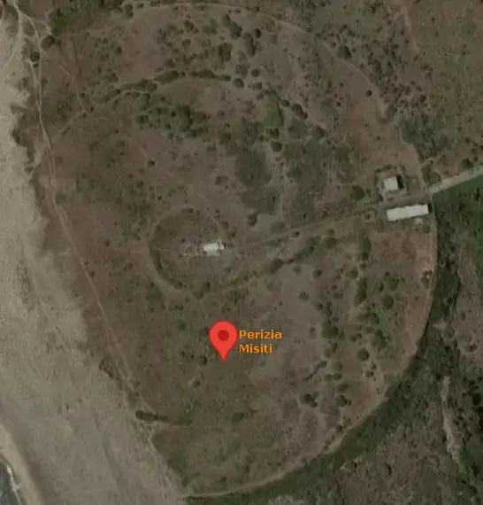
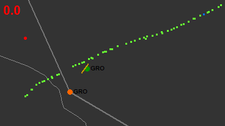
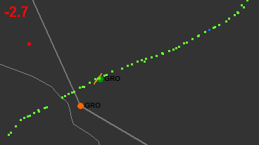
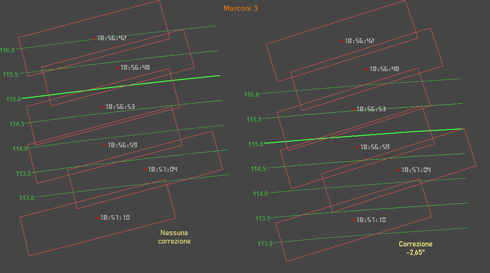

Allineamento radar Marconi e Selenia
INDICE
Quasi tutte le perizie radaristiche pongono l'accento sull'effettivo allineamento dei due radar di Ciampino rispetto al nord geografico.
È evidente che ruotando arbitrariamente un plot rilevato da un radar, questo risulterà posizionato su coordinate differenti rispetto alla posizione geografica reale. L'entità di questo sfasamento angolare è legato alla distanza tra il punto vero e il plot del radar dalla semplice relazione: d = dradar · sen(sfasamento), valida per piccoli angoli di sfasamento.
Ad esempio, il tabulato relativo all'estrattore 3 del Marconi mostra l'ultimo plot del volo IH870 in questo modo:
RADAR=03 SETTORE=07 NUM.PLOTS=03 TEMPO=0110 N.CICLO=04281035 ORA=80.06.27/18.59.45
X= 030.04 Y=-125.14 R= 129.04 A=166 01' Q= 00*A1136*C250 SSR.PR.
Sostituendo i numeri, per un ipotetico sfasamento di 3° si ottiene: d = 129 · sen(3) = 6,75 nm, cioè se l'antenna fosse ruotata di 3° rispetto al nord geografico, il plot si troverebbe distante circa 6,75 nm (12,5 km) dal punto reale.
Risulta, quindi, chiaro che una piccola rotazione dei plot fa cambiare completamente la modalità con la quale l'aereo è sceso (o precipitato) verso il mare, in quanto, prese per buone le coordinate di ritrovamento dei relitti sommersi (coordinate che nessuna delle parti ha contestato), se l'aereo si trovava oltre 10 km a ovest o a est del punto di ritrovamento significa che ha volato per arrivarci ed era quindi strutturalmente integro (sebbene danneggiato), se invece il DC-9 si trovava nei pressi dei relitti, è molto probabile che sia semplicemente precipitato dopo essere stato gravemente danneggiato in aria.
Come già messo in evidenza in altra parte di questo sito, le varie perizie e consulenze depositate non sono di grande aiuto, in quanto si contraddicono vicendevolmente. Si passa da uno sfasamento angolare nullo, ad uno sfasamento di 2,29° W per il Selenia e 1,5° W per il Marconi, per poi adottare 2,25° W per entrambi. In definitiva, l'adozione di un particolare sfasamento angolare costituirebbe una sorta di atto di fede nei confronti di un perito o di un altro, tanto più che le perizie e consulenze si basano su considerazioni puramente teoriche sul funzionamento dei radar e prendono per buoni i dati nominali dei due radar, ben sapendo che la realtà può essere significativamente diversa dai valori nominali.
Quindi, anche in questo caso, converrà basarsi su fatti che derivano da semplici ma concrete analisi basate esclusivamente su dati oggettivi (come i tabulati radar), lasciando perdere altre teorie difficilmente oggettivabili.
Le analisi presentate in questa pagina si basano su due aspetti diversi:
- comunicazioni TBT relative alla posizione dell'aereo rispetto ad un punto noto;
- posizione di alcuni aerei rispetto a rotte note (aerovie, sentieri d'avvicinamento e decollo).
Posizione dei radar Marconi e Selenia

L'immagine mostra l'
ubicazione del radar Marconi con evidenziato il punto dato dalla "
Perizia tecnico scientifica Misiti; parte radaristica 1a", pag. 4. Si nota che l'ubicazione reale è spostata di una novantina di metri. Le coordinate 41,798275° N, 12,219387° E risultano più accurate e sono quelle usate per i calcoli in questo sito (si tratta, comunque, di piccole differenze).
Per il Selenia, vengono usate le coordinate date nella perizia Misiti: 41,806389° N, 12,249444° E.
Analisi posizioni note
Dalle comunicazioni TBT fonte, è possibile conoscere la posizione che il volo IH870 aveva ad una data ora; confrontando la posizione comunicata con la posizione ottenuta dai tabulati, è possibile stabilire se lo sfasamento angolare esiste ed eventualmente calcolarne l'entità.
Le varie posizioni dell'aereo analizzate possono essere individuate nella cartina d'insieme.
I calcoli necessari per verificare quanto di seguito riportato non possono essere svolti con una semplice calcolatrice; conviene, invece, usare appositi siti: Vincenty's Direct e Vincenty's Inverse oppure Vincenty solutions of geodesics on the ellipsoid, scorrendo fino a metà pagina, dove compare "Live examples".
Ai fini della corretta comprensione di questo tipo d'analisi, è importante considerare due tipi di sfasamento angolare:
- lo sfasamento più ovvio è quello tra il nord geografico e il nord del radar e consiste semplicemente nell'impossibilità di allineare perfettamente un plot di ritorno da un qualunque oggetto situato a qualunque azimut e distanza dal radar con la sua reale posizione geografica;
- un altro sfasamento è presente tra i plot e gli elementi mostrati sullo schermo radar: aerovie, spazi aerei, radioassistenze, punti di riporto, ecc.; questi elementi venivano visualizzati analogicamente sullo schermo da una circuiteria elettronica indipendente dagli estrattori (usati per visualizzare i plot) ed anche in questo caso era impossibile allinearli perfettamente al riferimento usato per rappresentare i plot.
Lo sfasamento di tipo 1 determina l'errore nel calcolo della latitudine e longitudine, mentre lo sfasamento di tipo 2 determina l'errore nel posizionamento dei plot rispetto allo spazio aereo; il controllore, cioè, vede un aereo in una certa posizione rispetto, per esempio, ad una radioassistenza, mentre l'aereo è in un'altra posizione.
È evidente che lo sfasamento di tipo 1 è del tutto irrilevante ai fini del controllo del traffico aereo, mentre quello di tipo 2 è critico. Se, per assurdo, lo sfasamento di tipo 1 fosse 10°, ma anche lo spazio aereo mostrato sullo schermo fosse ruotato di 10°, il controllore non avrebbe alcun tipo di problema nel garantire la separazione tra gli aerei e il volo all'interno delle aerovie.
Un altro tipo di sfasamento angolare molto importante ai fini del traffico è quello presente tra i radar dei centri di controllo confinanti. Tuttavia, questo tipo di sfasamento è irrilevante per l'argomento trattato in questa pagina.
Iniziamo con la comunicazione delle 20:56B (18:56Z), in cui l'IH870 riporta l'ALFA (coordinate 40° 12' N, 13° 1' E, v. "Motivazioni - Parte 1a" a pag. 154) al controllore Antonio La Torre del settore TSR di Roma Radar:
20.56.00 =IH870= E' SULL'ALFA LA 870
=ROMA= E SI', AFFERMATIVO, LEGGERMENTE SPOSTATO SULLA DESTRA, DICIAMO 4 MIGLIA, E COMUNQUE IL RADAR TERMINA, 28.8 PER ULTERIORI
Sappiamo che i controllori di Roma Radar normalmente visualizzavano sullo schermo i dati provenienti dall'estrattore 1 del radar Marconi (v. "
Motivazioni - Parte 1a", seconda metà di pag. 148), ma l'analisi prende in considerazione tutti gli estrattori. Per ognuno di essi, si scelgono due plot aventi un orario molto vicino alle 18:56. Per l'estrattore 3 del Marconi, ad esempio, si ha:
RADAR=03 SETTORE=07 NUM.PLOTS=02 TEMPO=0329 N.CICLO=04279894 ORA=80.06.27/18.55.58
X= 025.02 Y=-096.22 R= 100.00 A=164 52' Q= 00*A1136*C250 SSR.PR.
RADAR=03 SETTORE=07 NUM.PLOTS=02 TEMPO=0399 N.CICLO=04279922 ORA=80.06.27/18.56.03
X= 026.09 Y=-097.00 R= 100.20 A=164 16' Q= 00*A1136*C250 SSR.PR.
Ruotando quei 164,... gradi dell'azimut di un certo numero di gradi, si può calcolare lo sfasamento da applicare ad A per posizionare l'IH870 a 4 nm dal punto ALFA.
La seguente tabella mostra il risultato ottenuto per 4 sfasamenti angolari preimpostati più altri 2: uno è quello che consente di ottenere una distanza dei plot dal punto ALFA pari esattamente a 4 nm e l'altro è lo sfasamento che consente di posizionare i plot esattamente a 43 nm da Ponza (distanza del punto ALFA):
Estrattore
Orario | Sfas.
[°] | Lat
[°] | Lon
[°] | D
[nm] | AZM
[°] | DPNZ
[nm] |
Marconi 1
18:55:58 | 0,00 | 40,18827 | 12,79318 | 10,3 | 86,0 | 44,0 |
| -2,25 | 40,20634 | 12,87526 | 6,5 | 93,3 | 42,5 |
| -2,65 | 40,20981 | 12,88975 | 5,9 | 95,7 | 42,2 |
| -3,00 | 40,21290 | 12,90241 | 5,3 | 98,3 | 42,0 |
| -3,88 | 40,22091 | 12,93404 | 4,0 | 108,2 | 41,4 |
| -1,46 | 40,19974 | 12,84664 | 7,8 | 89,8 | 43,0 |
Marconi 1
18:56:03 | 0,00 | 40,18050 | 12,81301 | 9,4 | 82,8 | 44,3 |
| -2,25 | 40,19916 | 12,89547 | 5,6 | 89,4 | 42,8 |
| -2,65 | 40,20274 | 12,91003 | 4,9 | 91,9 | 42,6 |
| -3,00 | 40,20592 | 12,92274 | 4,3 | 94,7 | 42,4 |
| -3,21 | 40,20785 | 12,93029 | 4,0 | 96,7 | 42,2 |
| -1,99 | 40,19686 | 12,88587 | 6,0 | 88,2 | 43,0 |
Marconi 3
18:55:58 | 0,00 | 40,18702 | 12,78706 | 10,6 | 85,7 | 44,2 |
| -2,25 | 40,20492 | 12,86921 | 6,8 | 92,4 | 42,6 |
| -2,65 | 40,20835 | 12,88372 | 6,1 | 94,6 | 42,3 |
| -3,00 | 40,21142 | 12,89639 | 5,6 | 97,0 | 42,1 |
| -4,04 | 40,22089 | 12,93395 | 4,0 | 108,2 | 41,4 |
| -1,63 | 40,19972 | 12,84653 | 7,8 | 89,8 | 43,0 |
Marconi 3
18:56:03 | 0,00 | 40,18151 | 12,81265 | 9,4 | 83,2 | 44,3 |
| -2,25 | 40,20016 | 12,89506 | 5,6 | 90,1 | 42,8 |
| -2,65 | 40,20373 | 12,90961 | 4,9 | 92,6 | 42,5 |
| -3,00 | 40,20691 | 12,92232 | 4,4 | 95,4 | 42,3 |
| -3,22 | 40,20899 | 12,93045 | 4,0 | 97,7 | 42,2 |
| -1,89 | 40,19702 | 12,88198 | 6,2 | 88,3 | 43,0 |
Selenia 2
18:55:56 | 0,00 | 40,19369 | 12,79353 | 10,3 | 87,8 | 43,7 |
| -2,25 | 40,21089 | 12,87576 | 6,5 | 95,7 | 42,2 |
| -2,65 | 40,21420 | 12,89029 | 5,9 | 98,3 | 41,9 |
| -3,00 | 40,21716 | 12,90298 | 5,3 | 101,1 | 41,7 |
| -3,92 | 40,22519 | 12,93614 | 4,0 | 112,2 | 41,2 |
| -1,02 | 40,20122 | 12,83104 | 8,5 | 90,4 | 43,0 |
Selenia 2
18:56:01 | 0,00 | 40,17909 | 12,78456 | 10,7 | 83,2 | 44,6 |
| -2,25 | 40,19603 | 12,86753 | 6,9 | 88,0 | 43,1 |
| -2,65 | 40,19930 | 12,88219 | 6,2 | 89,6 | 42,9 |
| -3,00 | 40,20222 | 12,89499 | 5,6 | 91,3 | 42,6 |
| -3,98 | 40,21073 | 12,93078 | 4,0 | 99,2 | 42,1 |
| -2,44 | 40,19759 | 12,87456 | 6,5 | 88,7 | 43,0 |
Selenia 4
18:55:56 | 0,00 | 40,19181 | 12,78373 | 10,7 | 87,3 | 43,9 |
| -2,25 | 40,20873 | 12,86606 | 6,9 | 94,3 | 42,4 |
| -2,65 | 40,21199 | 12,88061 | 6,3 | 96,5 | 42,1 |
| -3,00 | 40,21490 | 12,89332 | 5,7 | 98,9 | 41,9 |
| -4,18 | 40,22516 | 12,93599 | 4,0 | 112,1 | 41,2 |
| -1,30 | 40,20129 | 12,83140 | 8,5 | 90,5 | 43,0 |
Selenia 4
18:56:01 | 0,00 | 40,17909 | 12,78456 | 10,7 | 83,2 | 44,6 |
| -2,25 | 40,19603 | 12,86753 | 6,9 | 88,0 | 43,1 |
| -2,65 | 40,19930 | 12,88219 | 6,2 | 89,6 | 42,9 |
| -3,00 | 40,20222 | 12,89499 | 5,6 | 91,3 | 42,6 |
| -3,98 | 40,21073 | 12,93078 | 4,0 | 99,2 | 42,1 |
| -2,44 | 40,19759 | 12,87456 | 6,5 | 88,7 | 43,0 |
Lat e
Lon sono le coordinate dell'IH870 calcolate per
R e
A riportati nel tabulato apportando la correzione ad
A pari a
Sfas. (
nota: la distanza del plot dall'antenna non è
R, in quanto la parte dopo il punto decimale rappresenta i 32
i di miglio; ad esempio,
R del secondo plot non è 100,2 nm, ma è 100 + 20 / 32 nm, ovvero 100,625 nm).
D e
AZM sono la distanza e l'azimut del punto ALFA rispetto al punto di coordinate
Lat e
Lon.
DPNZ è la distanza del punto
Lat e
Lon da Ponza.
Le prime 4 righe di ogni blocco di 6 sono quelle con lo sfasamento preimpostato ad alcuni valori d'esempio; segue, poi la riga con lo sfasamento che dà una distanza dal punto ALFA uguale a 4 nm (colonna
D con valore pari a 4,0); l'ultima riga di ogni blocco è quella con lo sfasamento che dà una distanza del plot da Ponza pari esattamente a 43 nm (colonna
DPNZ con valore pari a 43,0).
È assolutamente evidente che l'azimut dei plot non è allineato con il nord geografico, in quanto l'aereo sarebbe distante 10 nm dal punto ALFA, anziché 4, come riportato dal controllore.
È altresì evidente che la distanza riportata dal controllore non può essere considerata assolutamente esatta ("
diciamo 4 miglia"), ma la correzione di 2,25° W indicata in alcune perizie e consulenze risulta insufficiente per giustificare una distanza di 4 nm.
Molta importanza riveste la colonna
AZM. L'IH870, infatti, pur non trovandosi esattamente sull'ALFA (in quanto non aveva alcuna guida azimutale a causa dello spegnimento del VOR e dell'NDB di Ponza), riceveva comunque la distanza dal TACAN di Ponza (come risulta dalle comunicazioni TBT). Una volta che i piloti leggono sul DME del pannello strumenti una distanza da Ponza di circa 43 nm (v.
2a cartina) riportano l'ALFA al controllore. Siccome il DC-9 si trovava ad ovest dell'ALFA,
AZM in tabella deve essere molto vicino a 90°, cosa che, molto chiaramente, non accade.
Una colonna che avrebbe potuto essere di grande utilità per determinare il reale sfasamento è
DPNZ. Infatti, lo sfasamento esatto sarebbe quello che dà 43 nm da Ponza. Purtroppo, questo è vero solo in teoria, in quanto non si ha alcuna certezza sull'effettiva sincronizzazione degli orari riportati nelle comunicazioni TBT con quelli indicati sui tabulati. L'errore di sincronismo potrebbe essere di un giro d'antenna (circa 5 s) come pure 10 s, non è possibile stabilirlo con assoluta certezza. Inoltre, è possibile che i piloti abbiano riportato l'ALFA poco dopo essersi trovati a 43 nm da Ponza, ad esempio 10/20 secondi dopo (non sarebbe né grave né inusuale). Bisogna considerare, infine, anche l'errore strumentale del DME.
Insomma, ci sono tante di quelle variabili in gioco che ritenere valido il riporto dell'ALFA per il calcolo dello sfasamento è del tutto inaccettabile, soprattutto per un aereo che si muove di più di 1 nm ogni 10 s.
L'estrema variabilità dello sfasamento per 43 nm da Ponza è ben evidenziata dalla tabella.
In sostanza, l'unica informazione utile che è possibile ottenere dal riporto di posizione sull'ALFA è che
lo sfasamento non può essere nullo ed è certamente superiore ad 1° in senso antiorario.
Passiamo ad una precedente comunicazione del controllore:
20.50.45 =ROMA= L'IH870, DICIAMO, HA LASCIATO PONZA 3 MIGLIA SULLA DESTRA, QUINDI, QUASI, QUASI, VA BENE PER PALERMO COSI'
Il controllore sta vedendo l'IH870 andare verso sud, lasciandosi alle spalle la radioassistenza di Ponza. Il DC-9 è al traverso di Ponza alle 18:50:18, ma la comunicazione avviene una trentina di secondi dopo.
Questa comunicazione è ancora meno utile della precedente, poiché la distanza dell'aereo dall'asse dell'aerovia è in continuo aumento (non è stabile). Ad ogni modo, nell'ottica di sfruttare tutto ciò che è possibile sfruttare, possiamo considerare i due plot che immediatamente precedono la comunicazione e il cui azimut è stabile; questo è l'esempio per l'estrattore 3:
RADAR=03 SETTORE=07 NUM.PLOTS=02 TEMPO=0389 N.CICLO=04278273 ORA=80.06.27/18.50.35
X= 026.31 Y=-056.15 R= 062.28 A=153 37' Q= 00*A1136*C257 SSR.PR.
RADAR=03 SETTORE=07 NUM.PLOTS=02 TEMPO=0459 N.CICLO=04278302 ORA=80.06.27/18.50.40
X= 026.25 Y=-057.06 R= 063.14 A=154 04' Q= 00*A1136*C256 SSR.PR.
Vediamo il risultato per vari sfasamenti angolari:
Estrattore
Orario | Sfas.
[°] | Lat
[°] | Lon
[°] | D
[nm] | AZM
[°] |
Marconi 1
18:50:35 | 0,00 | 40,85802 | 12,83487 | 6,4 | 59,9 |
| -2,25 | 40,87682 | 12,88312 | 4,0 | 58,1 |
| -2,65 | 40,88031 | 12,89160 | 3,5 | 57,7 |
| -3,00 | 40,88340 | 12,89899 | 3,2 | 57,3 |
| -3,15 | 40,88477 | 12,90223 | 3,0 | 57,1 |
Marconi 1
18:50:40 | 0,00 | 40,84744 | 12,83447 | 6,8 | 55,3 |
| -2,25 | 40,86624 | 12,88326 | 4,3 | 51,0 |
| -2,65 | 40,86973 | 12,89183 | 3,9 | 49,7 |
| -3,00 | 40,87282 | 12,89931 | 3,5 | 48,5 |
| -3,50 | 40,87729 | 12,90993 | 3,0 | 46,2 |
Marconi 3
18:50:35 | 0,00 | 40,85735 | 12,83307 | 6,5 | 59,9 |
| -2,25 | 40,87610 | 12,88135 | 4,1 | 58,2 |
| -2,65 | 40,87958 | 12,88984 | 3,6 | 57,8 |
| -3,00 | 40,88266 | 12,89723 | 3,3 | 57,4 |
| -3,23 | 40,88469 | 12,90205 | 3,0 | 57,1 |
Marconi 3
18:50:40 | 0,00 | 40,84531 | 12,82862 | 7,1 | 55,7 |
| -2,25 | 40,86393 | 12,87752 | 4,6 | 51,7 |
| -2,65 | 40,86739 | 12,88612 | 4,2 | 50,6 |
| -3,00 | 40,87046 | 12,89361 | 3,8 | 49,5 |
| -3,77 | 40,87731 | 12,90998 | 3,0 | 46,2 |
Selenia 2
18:50:37 | 0,00 | 40,85142 | 12,82704 | 7,0 | 58,5 |
| -2,25 | 40,86912 | 12,87606 | 4,5 | 55,3 |
| -2,65 | 40,87242 | 12,88468 | 4,1 | 54,4 |
| -3,00 | 40,87534 | 12,89220 | 3,7 | 53,6 |
| -3,64 | 40,88074 | 12,90582 | 3,0 | 51,5 |
Selenia 2
18:50:43 | 0,00 | 40,83803 | 12,82120 | 7,6 | 54,4 |
| -2,25 | 40,85556 | 12,87091 | 5,2 | 49,4 |
| -2,65 | 40,85883 | 12,87965 | 4,8 | 48,0 |
| -3,00 | 40,86173 | 12,88728 | 4,4 | 46,7 |
| -4,33 | 40,87305 | 12,91602 | 3,0 | 39,0 |
Selenia 4
18:50:37 | 0,00 | 40,85017 | 12,82337 | 7,1 | 58,7 |
| -2,25 | 40,86776 | 12,87246 | 4,7 | 55,6 |
| -2,65 | 40,87104 | 12,88109 | 4,3 | 54,8 |
| -3,00 | 40,87394 | 12,88862 | 3,9 | 54,0 |
| -3,81 | 40,88078 | 12,90593 | 3,0 | 51,5 |
Selenia 4
18:50:43 | 0,00 | 40,83728 | 12,81897 | 7,7 | 54,6 |
| -2,25 | 40,85475 | 12,86872 | 5,3 | 49,7 |
| -2,65 | 40,85801 | 12,87747 | 4,9 | 48,4 |
| -3,00 | 40,86090 | 12,88510 | 4,5 | 47,1 |
| -4,43 | 40,87302 | 12,91594 | 3,0 | 39,0 |
In questo caso,
D e
AZM sono la distanza e l'azimut della radioassistenza di Ponza rispetto al punto di coordinate
Lat e
Lon.
L'ultima riga di ogni blocco di 5 rappresenta lo sfasamento che dà esattamente 3 nm da Ponza.
Il disallineamento è sempre ben evidente; la distanza senza correzione angolare è più del doppio di quella riportata dal controllore.
Valori di distanza più ragionevoli si ottengono per correzioni intorno ai 3° W.
Anche in questo caso, è praticamente impossibile scegliere un valore ben preciso per lo sfasamento, ma è fuori di dubbio che
lo sfasamento non può essere nullo ed è certamente superiore ad un paio di gradi in senso antiorario.
Analisi rotta rispetto alle aerovie
Questa analisi ha il vantaggio di essere completamente svincolata da tutte le incertezze viste in precedenza. Essa si basa sul fatto che gli aerei civili dovevano volare rigorosamente all'interno dello spazio aereo controllato (salvo rarissime deroghe da parte degli enti di controllo del traffico aereo).
Riportando i plot su di una cartina con i necessari elementi aeronautici, si può osservare se un aereo ha una traiettoria compatibile con quella attesa. Se lo sfasamento angolare è corretto, la cartina mostrerà gli aerei nelle posizioni attese (ad esempio, in asse con le aerovie), altrimenti sembrerà che gli aerei stiano seguendo rotte prive di senso.
Siccome la distanza tra i plot rilevati dal radar Marconi e dal Selenia normalmente è modesta, questa analisi considera soltanto l'estrattore 3, che fa capo al radar Marconi, anche perché il Selenia non viene mai usato in questo sito per analisi di particolare importanza.
Le seguenti immagini mostrano la rotta seguita da alcuni aerei ottenuta senza alcuna correzione dell'azimut e con la correzione che mostra l'aereo nella posizione corretta. La correzione applicata è riportata in rosso in alto a sinistra di ogni immagine. Quasi tutte le immagini hanno le dimensioni dimezzate rispetto all'originale; per vederle a grandezza naturale basta cliccarci sopra.


Qui vediamo il caccia con transponder 4200, riportato come AA464/LL464 nel tabulato di Poggio Ballone (è quello che affianca l'IH870 dopo Firenze).
L'aereo esegue la procedura d'avvicinamento finale che prevede il sorvolo del TACAN di Grosseto (dischetto verde), l'allontanamento seguendo una specifica radiale del TACAN (oggi è la 245, all'epoca poteva essere leggermente diversa) e la virata verso l'aeroporto (non presente nei tabulati di Ciampino) per atterrare sulla pista 03 (segmento arancione).
È evidente che senza alcuna correzione, l'aereo passa decisamente a nord del TACAN.
Questi sono gli atterraggi e i decolli dall'aeroporto di Ciampino, la cui pista è rappresentata dal segmento arancione. I plot rosa rappresentano l'IH779.
Nonostante la distanza dall'antenna sia di appena 30 km, è comunque necessaria una correzione di ben 2° W, altrimenti gli aerei decollano ed atterrano nel nulla.
Questo aereo con transponder 0227 (volo AZ1133, Palermo - Milano), ha bisogno di almeno 2,5° W per volare in aerovia. Notare, tuttavia, il disallineamento ancora presente nella parte sud; per correggerlo sono necessari 2,7° W.
Il famoso volo KM153 dell'Air Malta ha bisogno di ben 3° W di correzione per volare all'interno delle aerovie.
Questi sono alcuni aerei con transponder 2000. Una correzione di 2,7° W sembra perfetta.
La motivazione per giustificare il disallineamento nelle immagini viste (che rappresentano solo una piccola parte di tutte le situazioni analizzate) potrebbe essere ricercata nella variazione della declinazione magnetica nel corso degli anni. Infatti, il radar Marconi è entrato in funzione nel dicembre 1963 (v. "Assistenza al volo - Air Traffic Control", pag. 26 a metà della 1a colonna), quando la declinazione magnetica a Fiumicino era pari a circa 1,8° W, per diventare circa 0,4° W nel 1980. Il mancato riallineamento periodico potrebbe aver contribuito ad amplificare o semplicemente a determinare lo sfasamento presente nel 1980, ma è solo un'ipotesi.
Quale che sia il motivo di questo disallineamento, è certo che:
- il fatto di non applicare alcuna correzione all'azimut è assolutamente inaccettabile, i plot sono in posizione notevolmente falsata rispetto alla realtà;
- la correzione di 2,25° W adottata in alcune perizie risulta evidentemente insufficiente;
- la correzione più verosimile risulta compresa tra 2,6 e 2,8° W.
Correzione usata nel sito
Trovare un valore esatto al decimo di grado per la correzione da applicare non risulta possibile, quindi, in base a tutte le considerazioni fatte e dando l'evidente scarso peso alle comunicazioni TBT, tutti i plot dei radar Marconi e Selenia usati nei calcoli sono ruotati in senso antiorario di 2,65°, cioè:
Azimutvero = Azimutradar - 2,65°
Verifica della correzione
Abbiamo visto che i riporti di posizione non possono essere usati per determinare lo sfasamento con sufficiente precisione. Conviene, allora, utilizzarli per avere una verifica approssimativa della bontà della correzione di 2,65°.
Dopo aver analizzato i due riporti già visti, rimane soltanto l'ultima
comunicazione TBT fonte: "
18.57.00 =IH870=
115 MIGLIA PER PAPA ALFA.... PER
PAPA ROMEO SIERRA, SCUSATE, MANTIENE 250".
Partiamo dalle coordinate del VOR/DME PRS.
La cartina (del 1983) è relativa ad una partenza strumentale in uso a Palermo in quegli anni ed è utile per conoscere le coordinate cercate: 38° 10,3' N e 13° 4,8' E (cliccare sulla cartina per ingrandirla).
Passiamo, poi, ad appurare come facevano i piloti a conoscere la distanza dell'aereo da un
DME.
Questo strumento (chiamato
HSI) veniva usato dai piloti per la radionavigazione. La distanza dal DME sintonizzato nell'apposito ricevitore VHF si poteva leggere nella finestrella in alto a sinistra.
L'immagine è tratta dal
manuale operativo (pag. 249) del DC-9-32 con marche D-ADIS costruito nel 1969. All'epoca, gli HSI erano tutti molto simili a questo e non avevano i decimi di miglio, quindi il pilota vedeva scorrere le unità nella parte più ampia a destra della finestrella "MILES", determinando la distanza dal DME in modo non molto preciso, ma comunque con un'approssimazione di circa mezzo miglio.
Arriviamo, così, a poter verificare dove risulta posizionato il DC-9 alle 18:57 rispetto al VOR/DME di Punta Raisi.

Le linee verdi mostrano la distanza da PRS, i quadratini rossi sono i plot del DC-9 rilevati dall'estrattore 3 del radar Marconi e i rettangoli rossi rappresentano l'incertezza del radar, come spiegato nella pagina "
Caduta in mare" (0,4 nm e 0,8°). Considerando l'elevatissima confidenza utilizzata per determinare l'incertezza in azimut e in distanza, è praticamente impossibile che la reale posizione in un dato orario sia esterna al rettangolo.
Si può osservare che senza applicare alcuna correzione, il rettangolo d'incertezza relativo al plot delle 18:56:59 arriva a malapena a 114,5 nm e il plot stesso si trova a meno di 114 nm da PRS, cioè ad oltre 1 nm dalle 115 miglia riportate dal DC-9.
Applicando, invece, la correzione di -2,65°, lo stesso plot è compreso tra 114,5 e 115 nm, proprio come riportato dall'IH870.
Questa ulteriore verifica, quindi, dimostra che il fatto di non applicare alcuna correzione all'azimut è assolutamente inaccettabile e che la correzione di -2,65° è perfettamente compatibile con il riporto di posizione esaminato.